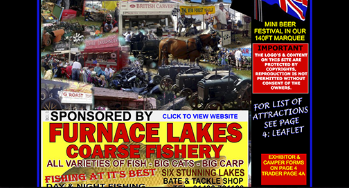
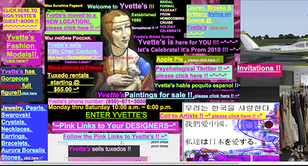
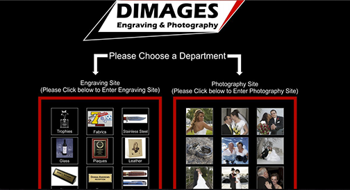

RUDGWICK COUNTRY SHOW
Well, Rudgwick, you've certainly caught my attention. With that black background, all that text everywhere, and that weird blurry blue banner thing you have your font on top of. Oooo! And that BEAUTIFUL collage of last years fair. I mean, WOW. You've really outdone yourself Rudgwick. I especially appreciate the multiple uses of fonts, going in every direction, with a seemingly endless amount of color variations. Also, thank you for providing a clock in the top right corner. It's seriously very useful, because my laptops, and all the other laptops and computers made in the last 30 years, do not have one.
YVETTES BRIDAL FORMAL
Okay, I put Yvette's website on here, because it really is awful, (I mean, it farts when you scroll for god's sake) BUT I have a soft spot for Yvette. This website is a literal maze. You can spend hours upon hours upon days clicking random links, that have no order whatsoever, and you'll always find something new. I once clicked around for an hour, and found a picture of the owner of Yvette's bridal formal, in a robe, posing with his cats. It's a pretty magical image. This website is crazy, but an adventure as well. The left side of my brain really admires the unorganized complexity, and the right side of my brain wants to smash my computer.
DIMAGES
Engraving or images? Hey, at least they make that clear. I think it should just be a rule of thumb that you never use white font on a black background, unless you really really know what you're doing. This website could be worse, but the overuse of fonts that are way too large, and the random dots on the left side, and centered text makes my brain hurt. Are they catering to the visually impared? What's going on here?